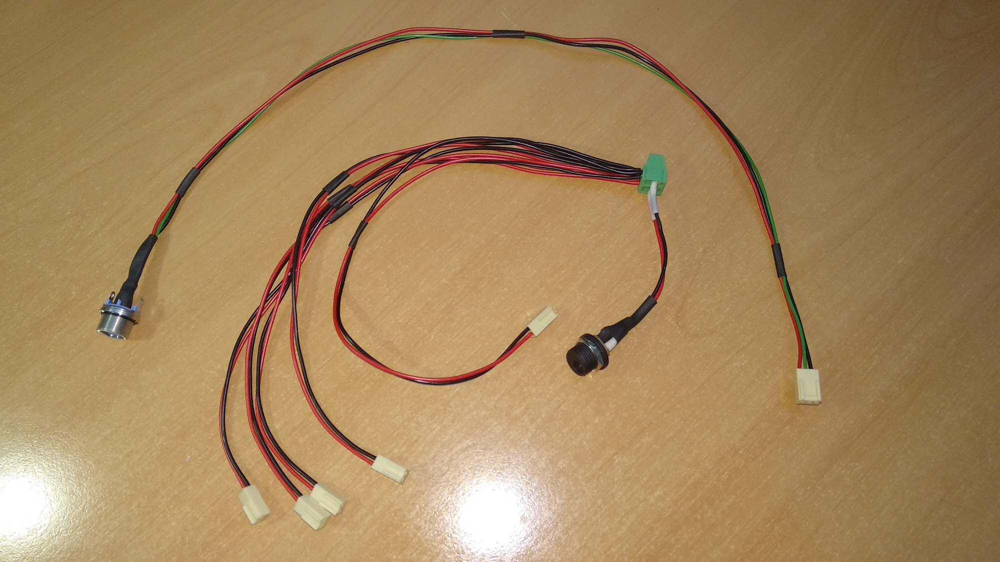
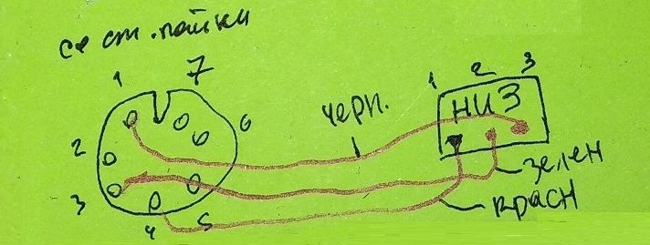
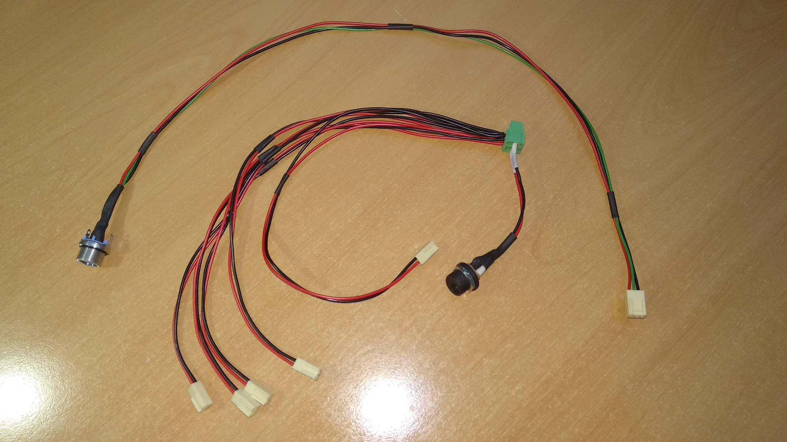
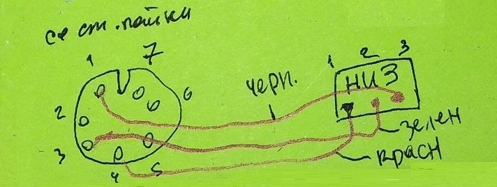

БДКГ-22/23. Настройка фона (старый вариант)
Каждый БДКГ-22 настраивается на фоне примерно 3-4 часа, поэтому если блоков несколько, и подключать их поочередно через Фишеровский разъем, то на настройку всех блоков уйдет очень много времени. Поэтому нужно подключать их сразу несколько — питание подключается ко всем БД, разъем обмена подключается к тому блоку, который нужно подключить к компьютеру.Подробнее об подключении через HU-разъемы
Подключение через HU разъемы

Работая с БД удобнее подключать их сразу несколько, а не по-одному (например для настройки фона).
Всё дело в том, что если на блоки подать только питание, они уже начнут собирать показания, высчитывать
среднее
и т.д.,
т.е. подключение к компьютеру им для работы не нужно. Поэтому, подключив питание на все блоки, мы
работаем со
всеми блоками сразу,
подключая HU3 разъем обмена конкретно к тому блоку, с которого хотим снять показания или внести
какие-либо
изменения.
(К тому же подключать HU разъем удобнее, чем Fischer.)
Для этого на плате расположены два HU разъема — двойной для питания, тройной для обмена.
 Для подключения удобно использовать вот такой набор проводов:


Для подключения удобно использовать вот такой набор проводов:


- Подключить питание на все блоки. Не отключать блоки от HU2, а подсоединять HU3 к обмену, так не будет сбрасываться статистика!
- На каждом блоке нажать "Сброс усреднения"
- Оставить блоки на 3-4 часа. Пусть набирают фон. На всё время настройки фона следует избегать работ с источниками вблизи БД
- Через 3-4 часа (погрешность должна опуститься примерно до 2,5%) подключится к каждому блоку через HU-разъем
обмена и проверить показания.
 Значение фона должно быть 100 нЗв () — т.е. 0,100 uSv/h
Значение фона должно быть 100 нЗв () — т.е. 0,100 uSv/h
- Если значение фона равно 0,100, нажать "Сброс усреднения" и оставить еще на 3-4 часа — для перепроверки
- Если после повторного цикла фон остался в требуемых пределах (98-102) — блок можно отключать, работа с ним закончена
- Для разблокировки кнопок управления — еще раз набрать слово serial
- Если программа считывает показания с БД (т.е. уже была нажата кнопка "Старт"), нажать "Стоп"
- Поставить флажок "Режим настройки"
- Записать себе (в Excel, например): номер блока, мощность дозы, значение "Коэф.собст.фона диап 0", процент погрешности
- В поле "Коэф.собст.фона диап 0" поставить нужный коэффициент. Если мощность дозы нужно увеличить, то коэффициент следует уменьшить; если мощность дозы нужно уменьшить, то коэффициент следует увеличить
- Обязательно снять флажок "Режим настройки"(не забывать, при включенном "режиме настройки" БД считает по другому алгоритму и данные будут сильно отличаться от правильных! (показания ниже ~ в 1,5 раза))
- Нажать "Старт"
- Нажать "Сброс усреднения"
- Перепроверить показания через 3-4 часа

Чтобы не терять времени, можно сразу при подключении блока ввести следующие коэффициенты:
- для БДКГ-22: 28
- для БДКГ-23: 19
Чтобы не подбирать значение коэффициенты наугад, можно воспользоваться следующей формой,
или программкой
или Excel файлом, где: Count - "Скорость счета", МД - желаемое значение мощности дозы (100), К1 - значение "Коэф.чувств. диап 0". В поле "Расч.Знач. К0" выводится расчитанное значение коэффициента — "Коэф.собст.фона диап 0"